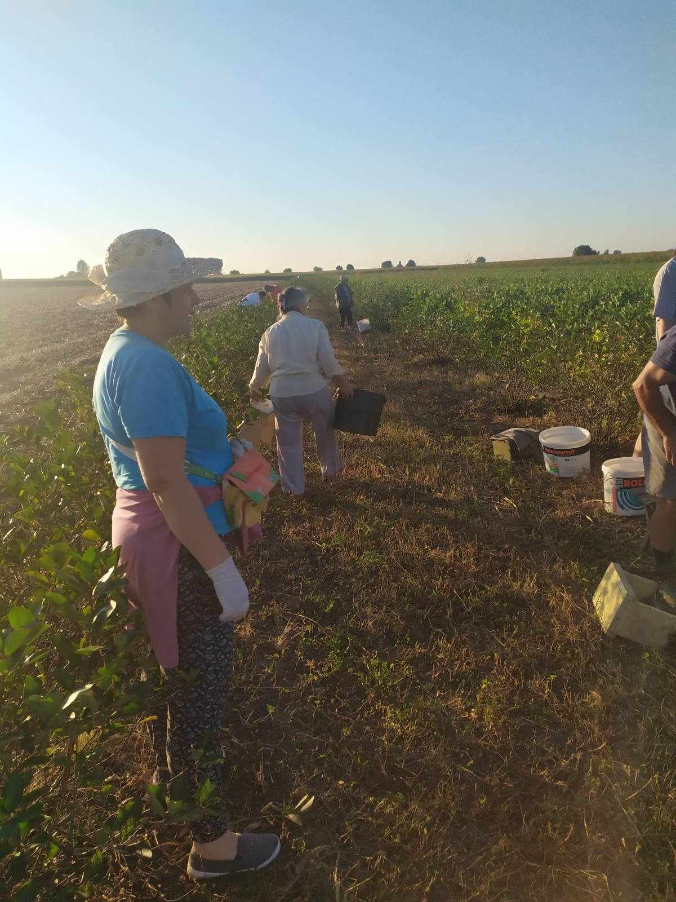
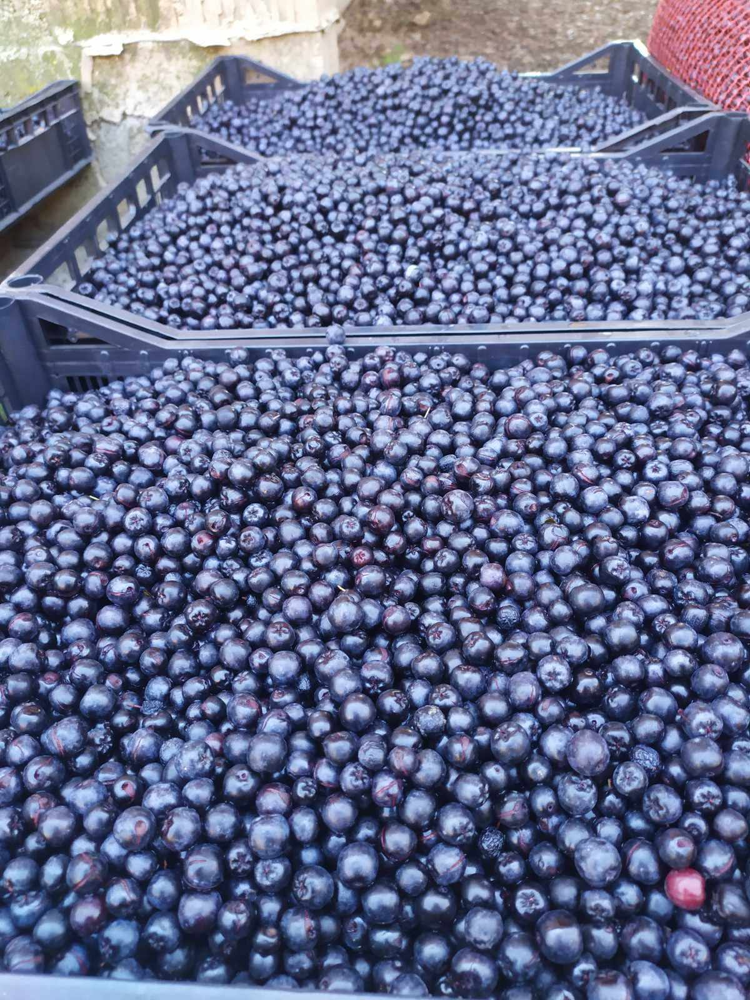
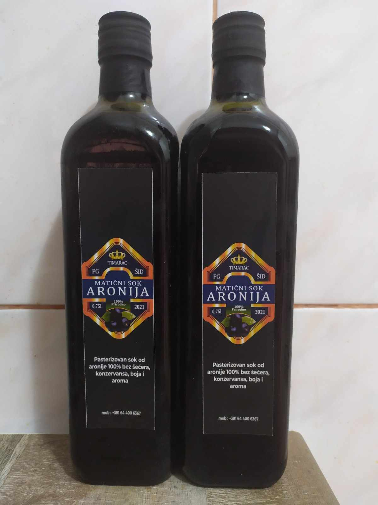
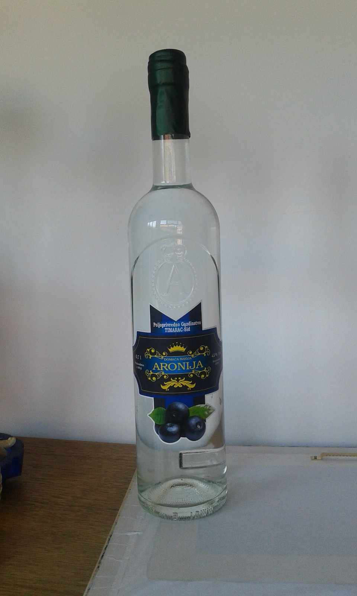
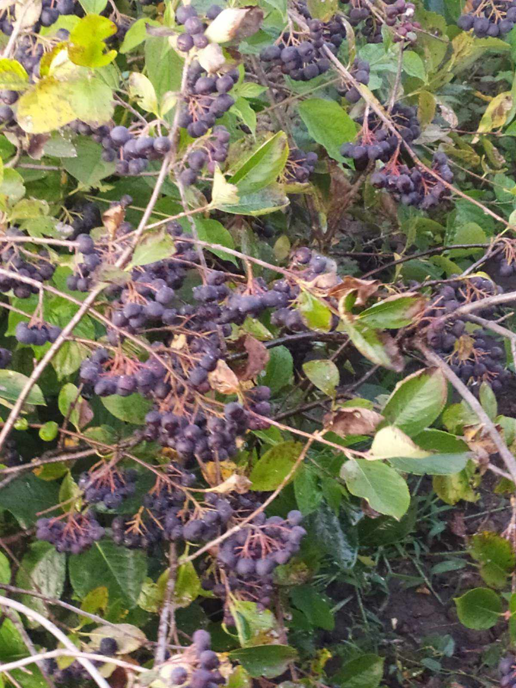

Porodična Tradicija: Uzgoj Aronije kao Simbol Zdravog Života
Kada sam pre nekoliko godina započeo uzgoj aronije na našem porodičnom imanju, nisam ni slutio koliko će ta odluka uticati na našu porodicu i način našeg života. Aronija, poznata i kao "crni biser", postala je ne samo voće sa izuzetnim zdravstvenim benefitima, već simbol našeg zdravog životnog stila i povezanosti sa prirodom.
Svako jutro započinjemo dan čašom svežeg soka od aronije, koji ne samo što obiluje antioksidansima i hranljivim materijama, već donosi osećaj povezanosti sa našim korenom i porodičnom tradicijom.
Naša porodična tradicija ne ograničava se samo na uzgoj aronije. Nedeljni izleti u prirodu postali su nezaobilazan deo naše rutine. Tamo provodimo vreme uživajući u svežem vazduhu i aktivnom odmoru, što ne samo što jača naše porodične veze, već podstiče i zdrav način života.
Pored toga, pomoć u poslu i međusobna podrška su još jedan važan deo naše porodične tradicije. Bez obzira na izazove sa kojima se suočavamo, uvek možemo računati na podršku i razumevanje naših porodičnih članova. Ovaj oblik povezanosti ne samo što jača našu vezu, već i podstiče duh zajedništva i solidarnosti.
Kroz uzgoj aronije, zdrav životni stil, porodične izlete i međusobnu podršku, mi gradimo temelje naše porodične tradicije. I dok se svet neprestano menja oko nas, mi čvrsto stojimo uz naše vrednosti i međusobnu ljubav, gradeći mostove koji nas povezuju sa prošlošću, sadašnjošću i budućnošću.
.jpeg)


Aronija: Voće Zdravlja i Inspiracije
Aronija, ta skromna voćka koja je postala simbol zdravlja i obilja, ne samo što nas inspiriše svojim izvanrednim ukusom, već i svojom sposobnošću da oplemeni prirodu i obogati naš život na više načina.
Uzgoj aronije nije samo posao, već i poziv koji nas povezuje sa prirodom na dublji način. Dok posmatramo mlade sadnice kako rastu i razvijaju se, učimo da cenimo snagu prirode i njen beskrajni potencijal za stvaranje. Uzgajanje aronije zahteva strpljenje i pažnju, ali nagrada koju dobijamo kada se biljke razviju u punom sjaju je neprocenjiva. To je trenutak kada shvatimo da smo deo nečeg većeg, ne samo da uzgajamo voće, već i čuvamo prirodu i podstičemo njen rast.
Dok se brinemo o našim aronijama, ne samo da stvaramo uslove za njihov prosperitet, već i za prosperitet celog ekosistema. Pčele, te vredne radilice prirode, pronalaze u aroniji izvor obilja i inspiracije. Njihov rad u oprašivanju aronije ne samo što doprinosi povećanju prinosa, već i očuvanju biodiverziteta i ravnoteže u prirodi. Bez njih, naši napori u uzgoju aronije ne bi bili toliko plodonosni.
Kada dođe vreme za branje aronije, to postaje poseban trenutak. To nije samo berba voća, već i slavlje prirode i našeg rada. Dok beremo plodove, osećamo se blagosloveno što smo deo ovog ciklusa života, što smo svedoci čuda prirode i što imamo privilegiju da uživamo u plodovima našeg rada.
Dok gledamo kako naša aronija sazreva i donosi plodove, ne možemo a da se ne divimo njenom veličanstvenom putovanju i sposobnosti da nas inspiriše na svakom koraku. Ona nas podseća na moć prirode da nas hrani, leči i inspiriše, i daje nam snagu da nastavimo dalje, čuvajući ovaj dragoceni dar i prenoseći ga budućim generacijama.


